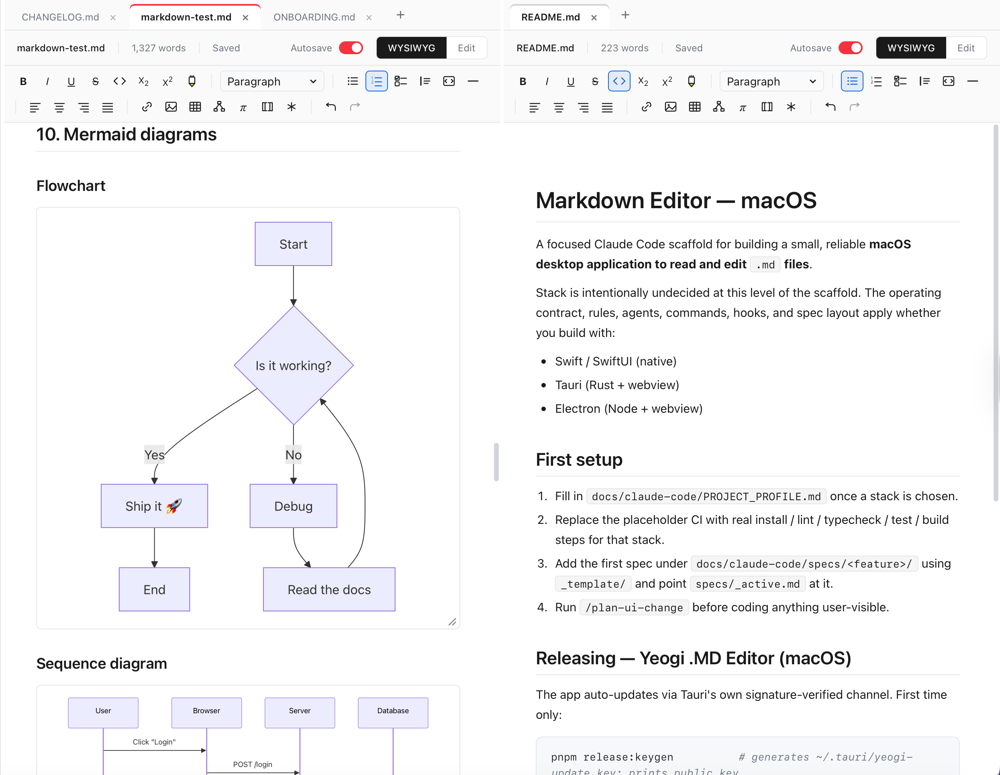
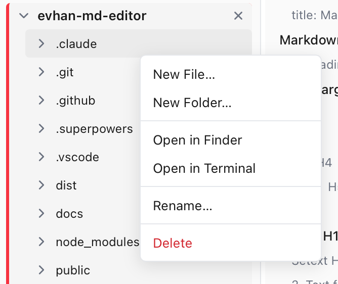
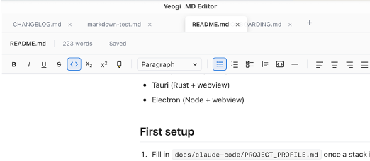
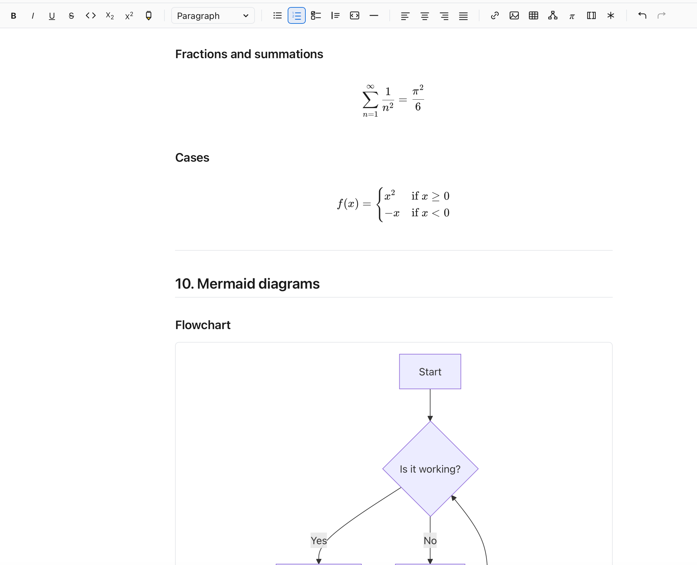

A Markdown editor that does all seven things you actually want.
Rendered + editable WYSIWYG. Side-by-side panes. Real folder tree. Multiple folders open at once. Drag-reorder tabs. Right-click that actually works. Free.
Built for people who write a lot of Markdown
WYSIWYG that's actually editable
Tables are tables, headings are heading-sized, code blocks are syntax-highlighted — and you can put your cursor in the middle of any of them and just type. ⌘E flips to source mode whenever you want to see the actual Markdown.
Side-by-side panes
Open two documents side by side, or the same doc in WYSIWYG + source mode at the same time. Each pane has its own toggle. ⌘\ opens a tab in the other pane.
Multi-folder explorer
Open up to five folders at once — work notes, personal notes, a reference vault, all in one explorer. Per-folder collapse so you only pay for the ones you're using.
Chrome-style drag-reorder tabs
Drag tabs to reorder them within a pane. Live visual feedback — the dragged tab follows your cursor, others slide aside. Works with pointer events, not flaky HTML5 drag-and-drop.
Right-click that does real work
New File · New Folder · Open in Finder · Open in Terminal · Rename · Duplicate · Delete with descendant-count confirmation · Reload from disk. On files, folders, and folder-group headers.
Auto-updating
Signed with an Apple Developer ID, notarized by Apple, and delivered through Tauri's signed auto-updater. Open the app; if there's a new version, it offers to install. No re-download ritual.
Plus the obvious things
- Wiki-links (
[[Note Name]]) with auto-create + backlinks - Inline math (KaTeX), tables, footnotes, definition lists, task lists
- Mermaid diagrams (flowchart, sequence, state, gantt, quadrant, ER, …) — with a render-only preprocessor that fixes the common ways LLMs produce broken Mermaid syntax
- 10 themes (Light, Dark, GitHub, Dracula, Nord, Tokyo Night, …) — each with a matching Shiki code-block palette
- Native menu bar with Open Recent, Find & Replace, Zoom, Themes
- Print / Export to PDF · Export to HTML
- File watcher — external changes show up live, conflict banner for unsaved-edit collisions
- Per-document autosave (toggle per file)
- Session restore — tabs, panes, focus all come back on relaunch
Screenshots




Why this exists
I write a lot of Markdown. Every editor I'd tried picked three of the seven things I cared about and called it a feature set. Obsidian has folders but the rendered view is half-rendered. Bear is gorgeous but no folder tree. Typora is the actual WYSIWYG editor that works, but no folder explorer, no tabs, no side-by-side. So I built something with all seven, and now I use it every day.
Yeogi is built with Tauri 2 (Rust + WebView), React, Tiptap for the WYSIWYG mode, and CodeMirror for source mode. It's free. It runs locally. It doesn't phone home, doesn't collect data, doesn't have ads, doesn't have a subscription.